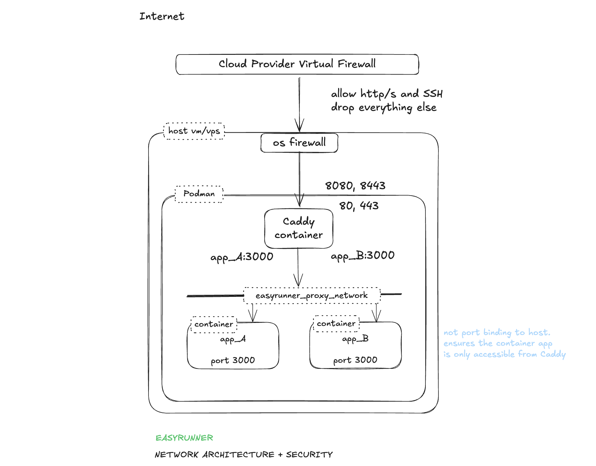

EasyRunner Secure Network Architecture
Every aspect of EasyRunner is designed with security in mind. While it's impossible for anybody to guarantee of being 100% secure, making security a first class design requirement goes a long way to significantly reducing the risk. A web host server has multiple vectors that needs to be secured. Here's how networking of a host server get's configured with network security in mind.

The goal with the network setup is to reduce the surface area to a minimum. We explicitly only allow what's needed. Drop everything else by default. We generally follow the defense in depth principle.
OS Firewall
- Implemented using IPTables.
- Default drop all policy
- Explicit allow 80, 443, 22
- 80 and 443 port redirects to reverse proxy that listing on 8080 and 8443.
- Only allow established connections to 8080 and 8443 i.e. externally port forward traffic. Local traffic is blocked.
- Port 2019 traffic restricted to just localhost. Explicit block rule for external traffic (defense in depth)
Caddy Reverse Proxy
- Runs in a container in the context of it's own OS user account
- Bind to all host network interfaces on ports 8080, 8443 (maintain high ports only binding in rootless mode)
- Bind to host localhost on port 2019 (Caddy Admin API)
- Configured to always redirect HTTP -> HTTPS (ensures HTTPS always)
- TLS certificated are automatically setup for every application with certs issued by Let's Encrypt.
- Minimise information leaking that can be used by bad actors to identify vulnerable system. For example: remove X-Powered header.
Intrusion Prevention
Introduced in v0.14.b1 - Nov 2025

- Implemented using Fail2Ban — a popular OSS intrusion prevention system (https://github.com/fail2ban/fail2ban) that monitors log files and bans IPs showing malicious behaviour.
- Runs on the server with no external dependency.
- Basic policy for SSH failed connection attempt jail. More OOTB policies will be added.
- IPs with 5 failed SSH connection attempts within 10mins get's banned for 1hr. 3 fails within 1 day gets a 7 day ban.
- Fail2Ban enforces bans by adding block rules to the OS Firewall.
- Management commands integrated into EasyRunner for convenience. Custom policy management commands will be added in the future.
App Containers
- Containers in each app stack run in the context of a dedicated OS user account. One per stack.
- Containers do NOT bind to host ports. Therefore only accessible on the proxy network.